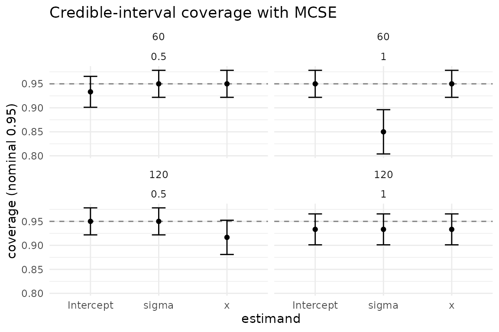
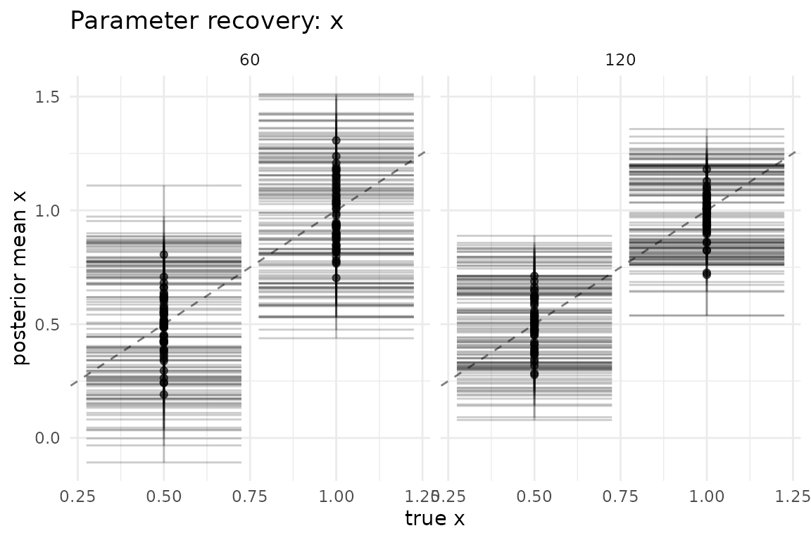

Design of simulation studies
Source:vignettes/design-of-simulation-studies.Rmd
design-of-simulation-studies.RmdIntroduction
A simulation study is an experiment whose subjects are datasets simulated from a known data-generating process (DGP), and whose measurements are the performance of one or more estimators applied to those datasets. Because the truth is known, simulation is the gold standard for evaluating statistical methods — but only when the study itself is well-designed and honestly reported.
This vignette follows the framework of Morris, White & Crowther (2019, Statistics in Medicine), which structures a simulation study around four questions:
- What are the estimands — the quantities we want the method to recover?
- What are the data-generating mechanisms — the DGPs that produce the simulated datasets, and how do they expose the estimands?
- What are the performance measures — bias, variance/SE, MSE, coverage, etc. — used to judge the method, and what is their Monte Carlo standard error (MCSE)?
- How many replicates are needed to estimate those performance measures to acceptable precision, and across which varying conditions?
bayesim provides typed primitives for each of these. This vignette
runs end-to-end with LinearRegressionFitter() (exact
conjugate Bayesian linear regression, no Stan) so every chunk is
executable.
Estimands and data-generating mechanisms
The estimand is the target of inference — the
parameter whose value the method is supposed to recover. In a
simulation, the estimand is known because we set it. bayesim
records it automatically: any name in a generator’s
true_params vector becomes a
truth__<param> column in the per-task summary (see
vignette("getting-started")), and that column is what the
analysis layer pairs against the per-task posterior estimate.
The data-generating mechanism is the function that
turns a parameter setting into a dataset. bayesim generators have the
signature (data_spec, task_ctx) -> data_bundle and must
consume the ambient RNG state (the engine restores a per-task L’Ecuyer
stream before each call; do not re-seed inside). The factory
constructors fixed_truth_generator(),
prior_predictive_generator(), and
ifs_generator() cover common patterns; for everything else,
write an inline generator like the one below.
# A linear-regression DGP. The estimands (Intercept, slope x, sigma) are
# recorded as true_params; bayesim surfaces them as truth__* columns.
linear_dgp <- function(data_spec, task_ctx) {
n <- data_spec$n
beta <- data_spec$beta
x <- stats::rnorm(n)
y <- 1 + beta * x + stats::rnorm(n)
list(
train = data.frame(y = y, x = x),
test = NULL,
response = "y",
true_params = c(Intercept = 1, x = beta, sigma = 1),
vars_of_interest = c("Intercept", "x", "sigma")
)
}The data_grid is the table of data_spec
rows swept over. Each row is one data-generating condition; each
condition is replicated n_replicates times.
Performance measures
The performance measures of Morris et al. (2019) characterise an estimator across replicate datasets:
- bias — does the estimator hit the truth on average?
- empirical SE (emp_se) — how variable is the estimator across datasets?
- MSE — mean squared error, the combined bias-plus-variance.
- coverage — does the nominal interval contain the truth at the nominal rate?
- model SE (model_se) — the average uncertainty the method itself reports (compare to the empirical SE to check the method’s uncertainty calibration).
Each of these is a Monte Carlo estimate from n
replicates, so each carries an MCSE — the simulation’s
own standard error. Reporting a performance estimate without its MCSE is
like reporting a sample mean without a standard error: the reader cannot
tell signal from noise. bayesim computes every MCSE for you.
Run a small study and call performance_measures():
config <- simulation_config(
data_grid = data.frame(n = 100L, beta = 0.5),
fit_grid = data.frame(model = "lm"),
data_generator = linear_dgp,
fitter = LinearRegressionFitter(n_draws = 400L),
metrics = list(posterior_summary_metric()),
n_replicates = 80L,
seed = 11L
)
result <- run_simulation(config, progress = FALSE)
#> 80 tasks = 1 data x 1 fit x 80 reps
#> ℹ Starting simulation with 80 tasks
#>
#> ✔ Simulation complete: 80/80 tasks succeeded in 0.7s
pm <- performance_measures(result, estimand = "x")
pm
#> # A tibble: 6 × 9
#> data_n data_beta fit_model estimand measure value mcse n_sim truth_mode
#> <int> <dbl> <chr> <chr> <chr> <dbl> <dbl> <int> <chr>
#> 1 100 0.5 lm x bias -0.0211 1.22e-2 80 fixed
#> 2 100 0.5 lm x emp_se 0.110 8.71e-3 80 fixed
#> 3 100 0.5 lm x mse 0.0123 2.11e-3 80 fixed
#> 4 100 0.5 lm x model_se 0.0979 9.96e-4 80 fixed
#> 5 100 0.5 lm x coverage 0.938 2.71e-2 80 fixed
#> 6 100 0.5 lm x n_sim 80 NA 80 fixedThe tidy tibble has one row per estimand x measure, with
the value and its mcse. For the conjugate
fitter on this DGP we expect: bias near zero, emp_se and model_se close
to each other (the posterior correctly reports its own uncertainty), and
coverage near the nominal 0.95.
The MCSE formulas follow Morris et al. / rsimsum: bias MCSE =
sd / sqrt(n); emp_se MCSE = sd / sqrt(2(n-1));
MSE MCSE via the delta method on the squared errors; coverage MCSE =
sqrt(p(1-p) / n); model_se MCSE =
sd(posterior_sd) / sqrt(n). These are exactly the formulas
inverted by n_replicates_for_target() below.
How many replicates?
The MCSE shrinks as 1/sqrt(n), so the number of
replicates is a precision budget. n_replicates_for_target()
inverts the MCSE formulas to tell you how many replicates you need to
hit a target MCSE before you run the study — a power
calculation for simulation.
For coverage, the MCSE is sqrt(p(1-p) / n), maximised at
p = 0.5 (the conservative default). Inverting gives
n = p(1-p) / MCSE^2.
# Target: coverage MCSE of 0.03 at the conservative p = 0.5.
n_replicates_for_target(target_mcse = 0.03, metric_type = "coverage")
#> [1] 278So 278 replicates (ceiling) are needed to estimate a
coverage rate to within +/- 0.03 (one MCSE) at the
worst-case variance. If the coverage is expected near the nominal 0.95,
supply p = 0.95 for a tighter, smaller estimate:
n_replicates_for_target(target_mcse = 0.03, metric_type = "coverage", p = 0.95)
#> [1] 53For a continuous measure (bias, model SE), the MCSE is
sd / sqrt(n), so you must supply an assumed standard
deviation for the per-replicate point estimate (e.g. a guess at the
empirical SE of the estimator, perhaps from a pilot run):
# Target bias MCSE of 0.05, assuming the point estimate has sd ~ 0.5.
n_replicates_for_target(
target_mcse = 0.05, metric_type = "continuous", assumed_sd = 0.5
)
#> [1] 100Use these numbers to size the study up front: a coverage claim with 50 replicates and MCSE 0.07 is barely more precise than a coin flip, while 1,000+ replicates give MCSEs near 0.015 — the difference between a defensible simulation and an anecdotal one.
Varying conditions
A simulation study that varies nothing proves nothing about the
range of behaviour a method exhibits. The Morris et
al. framework emphasises sweeping over the factors that plausibly change
performance: sample size, effect size, noise level, model
mis-specification, etc. In bayesim, varying conditions are just
additional rows in the data_grid (or columns swept within
it); the analysis layer’s by argument then groups the
performance measures by condition.
Below we vary sample size and effect size together:
design_config <- simulation_config(
data_grid = data.frame(
n = c(60, 60, 120, 120),
beta = c(0.5, 1.0, 0.5, 1.0)
),
fit_grid = data.frame(model = "lm"),
data_generator = linear_dgp,
fitter = LinearRegressionFitter(n_draws = 400L),
metrics = list(posterior_summary_metric()),
n_replicates = 60L,
seed = 23L
)
design_result <- run_simulation(design_config, progress = FALSE)
#> 240 tasks = 4 data x 1 fit x 60 reps
#> ℹ Starting simulation with 240 tasks
#>
#> ✔ Simulation complete: 240/240 tasks succeeded in 1.1sGroup the performance measures by both conditions with the
by argument. The data_grid columns surface in
the summary with a data_ prefix, so we group by
data_n and data_beta:
pm_design <- performance_measures(
design_result, estimand = "x", by = c("data_n", "data_beta")
)
pm_design
#> # A tibble: 24 × 8
#> data_n data_beta estimand measure value mcse n_sim truth_mode
#> <dbl> <dbl> <chr> <chr> <dbl> <dbl> <int> <chr>
#> 1 60 0.5 x bias -0.00245 0.0158 60 fixed
#> 2 60 0.5 x emp_se 0.122 0.0112 60 fixed
#> 3 60 0.5 x mse 0.0147 0.00279 60 fixed
#> 4 60 0.5 x model_se 0.130 0.00205 60 fixed
#> 5 60 0.5 x coverage 0.95 0.0281 60 fixed
#> 6 60 0.5 x n_sim 60 NA 60 fixed
#> 7 60 1 x bias -0.0164 0.0177 60 fixed
#> 8 60 1 x emp_se 0.137 0.0126 60 fixed
#> 9 60 1 x mse 0.0187 0.00264 60 fixed
#> 10 60 1 x model_se 0.126 0.00230 60 fixed
#> # ℹ 14 more rowsRead each row as one condition cell. As n grows, the
empirical SE and MSE should shrink (more data, tighter inference); as
beta grows the signal strengthens. Coverage should stay
near 0.95 throughout for the conjugate fitter. The MCSE column tells you
how much trust to put in each cell at 60 replicates — a reminder that
small condition x condition grids with few replicates produce noisy
performance estimates.
Plotting coverage across conditions gives the visual version of the
coverage rows. plot_coverage() plots each condition x
estimand cell as a point with MCSE error bars against the nominal
rate:
plot_coverage(design_result, by = c("data_n", "data_beta"))
For a fuller picture, plot_recovery() shows per-task
posterior-mean estimates against the truth, faceted by a condition
column — a direct visual check that the estimator recovers the estimand
across the design:
plot_recovery(design_result, estimand = "x", by = "data_n")
The parameter argument is named estimand, the same term
performance_measures() uses (var = remains
accepted as a compatibility alias).
Summary
The Morris et al. (2019) framework, in bayesim, maps to a small set of typed primitives:
-
Estimands are recorded by generators as
true_paramsand surfaced astruth__*columns. -
DGPs are generators
(
fixed_truth_generator(),prior_predictive_generator(),ifs_generator(), or an inline function). -
Performance measures with MCSEs come from
performance_measures(). -
Replicate sizing comes from
n_replicates_for_target(). -
Varying conditions are rows/columns of the
data_grid, grouped in the analysis layer viaby.
For the calibration-specific counterpart to performance coverage —
checking the whole posterior for self-consistency rather than a
single interval — see vignette("sbc-and-calibration").